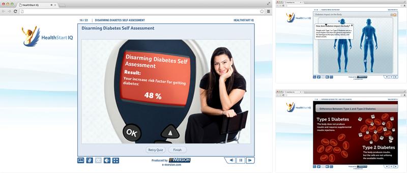

<section class="portfolio-single padding-top-80 padding-bottom-80">
      <div class="container">

        <!-- Images -->
        <div class="row">
          <div class="col-md-7">
            <!-- ITEM -->
            <article class="portfolio-item">
              <div class="portfolio-image">  </div>
            </article>

            <!-- ITEM -->
            <article class="portfolio-item">
              <div class="portfolio-image">  </div>
            </article>
          </div>

          <!-- Content -->
          <div class="col-md-5">
            <div class="port-detail">
              <h4>Diabesity</h4>
              <p><strong>Desafio: </strong>Iniciar a conscientização sobre a ligação direta entre obesidade e diabetes tipo 2, voltado especialmente para o público norte americano.</p>
              <p><strong>Solução:</strong> Desenvolvimento do conteúdo on-line a partir de pesquisas exploratórias, com base em estatísticas de saúde pública dos EUA. O material ficaria disponível em site de planos de saúde e fundações que promovem qualidade de vida, como a HealthStart IQ.</p>
              <p>O curso contou com infográficos animados e interações com a intenção de transmitir o máximo de informação, sendo o mais leve e lúdico possível. A plataforma utilizada para criar as interações, quizzes e animações com áudio sincronizado foi o Articulate Presenter.</p>
              <p><strong>Diferencial: </strong>Normalmente, os exercícios são construídos de forma que o usuário acumula pontos ao responder corretamente as questões. Porém, no Diabesity o exercício foi alterado de forma estratégica, o usuário deveria responder às questões, apontando seu estilo de vida, hábitos alimentares e atividade física, cada resposta relacionada à um hábito considerado de risco para Diabetes Tipo 2, contaria como ponto para o resultado final, e no intervalo entre cada questão, o usuário recebia um texto estatístico sobre a doença no país. O resultado final seria o percentual de risco de adquirir Diabetes Tipo 2 do usuário, baseado em seus hábitos de vida.</p>
              <p>Este curso foi vencedor de 2 concursos nos EUA, o <a href="http://blogs.articulate.com/word-of-mouth/and-the-winners-of-the-2010-articulate-guru-awards-are/" target="_blank">Articulate Guru Awards 2010</a> e o <a href="http://www.elearningguild.com/content.cfm?selection=doc.1865" target="_blank">e-Learning DemoFest 2010</a>. Os critérios de avaliação foram: <strong>1.</strong> uso amplo, efetivo e inovador das ferramentas da plataforma Articulate Presenter. <strong>2.</strong> apresentar recursos visuais como gráficos, vídeos e áudio. <strong>3.</strong> um design que promova o aprendizado com foco na interatividade.</p>
              <ul class="margin-top-50 margin-bottom-50">
                <li> <span>Cliente</span> Health Start IQ</li>
                <li> <span> Empresa</span> e-Mersion</li>
                <li> <span> Categoria</span> Design de Aprendizado</li>
              </ul>
              <a href="../portfolio_2016/diabesity/index.html" target="_blank" class="btn">Assista ao curso</a> </div>
          </div>
        </div>
      </div>
    </section>